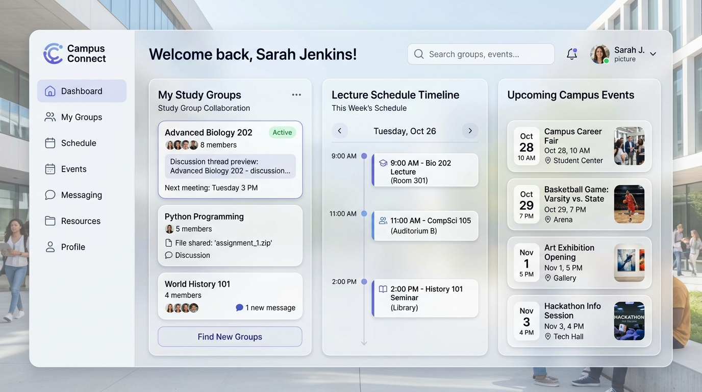

Student Platform
Project 01 / 04
Campus Connect
A centralized student ecosystem concept unifying class schedules, study group threads, course files, and upcoming university events in a clean modern interface.